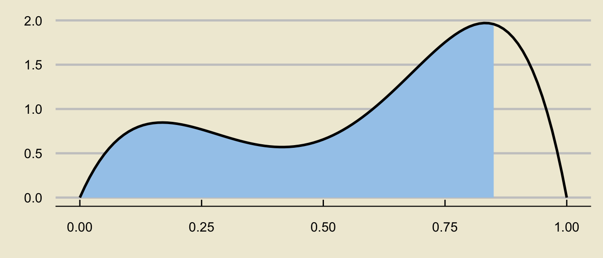

import scipy.stats as sps
-sps.norm.ppf(0.05/2)1.9599639845400545Review for Midterm 2
Recall that in the framework of hypothesis testing, we wish to utilize data to assess the plausibility/validity of a hypothesis, called the null hypothesis.
In the case of hypothesis testing for a population proportion \(p\), our null takes the form \(H_0: p = p_0\) and there are several different alternative hypotheses we could consider:
The different alternative hypotheses lead to different forms of our hypothesis test.
Last lecture, we discussed how to construct a two-sided hypothesis test.
On the homework, I ask you to derive the lower-tailed hypothesis test (and I also provide you with the form for an upper-tailed hypothesis test in the last lecture slide deck)
To help you with that homework problem, allow me to re-do the derivations we did last lecture, but this time more in the style of the homework problem.
We start with the test statistic \[ \mathrm{TS} = \frac{\widehat{P} - p_0}{\sqrt{\frac{p_0 (1 - p_0)}{n}}} \]
If the null were true, i.e. if the true value of \(p\) were \(p_0\), then this test statistic would follow the Normal Distribution provided that we are able to invoke the Central Limit Theorem for proportions, which we can do only if
Now, let’s think about when we would reject the null that \(p = p_0\) in favor of the alternative that \(p \neq p_0\).
If we observed a value of \(\widehat{p}\) that was much greater than \(p_0\) (i.e. if \(\mathrm{ts}\) was much larger than 0), we would probably reject the null in favor of the alternative.
But, if we observed a value of \(\widehat{p}\) that was much smaller than \(p_0\) (i.e. if \(\mathrm{ts}\) was much smaller than 0), we would probably also reject the null in favor of the alternative.
Therefore, we reject when the magnitude of \(\mathrm{ts}\) is large; i.e. with \(|\mathrm{ts}| > c\) for some constant \(c\).
This means our test should take the form \[ \texttt{decision}(\mathrm{TS}) = \begin{cases} \texttt{reject } H_0 & \text{if } |\mathrm{TS}| > c \\ \texttt{fail to reject } H_0 & \text{otherwise}\\ \end{cases} \]
Finally, we need to consider how large to make our cutoff (or critical value) \(c\).
This is where we need to consider the two types of errors we could commit: Type I and Type II Errors
Type I error: the null was rejected when it was in fact true (convicting an innocent person)
Type II error: the null was not rejected when it was in fact false (letting a guilty person go free)
We call the probability of committing a Type I error the level of significance \(\alpha\), which we fix before beginning our testing procedure.
In terms of the critical value, this means \(c\) should satisfy the equation \[ \mathbb{P}_{H_0}(|\mathrm{TS}| > c) = \alpha \] where \(\mathbb{P}_{H_0}\) means “probability of, assuming the null is actually true (i.e. that \(p = p_0\))”.
Since we know that \(\mathrm{TS}\) follows a standard normal distribution under the null, this means that \(c\) should be the \((\alpha / 2) \times 100\)th percentile of the standard normal distribution.
As such, the final form of our test is \[ \texttt{decision}(\mathrm{TS}) = \begin{cases} \texttt{reject } H_0 & \text{if } |\mathrm{TS}| > z_{1 - \alpha/2} \\ \texttt{fail to reject } H_0 & \text{otherwise}\\ \end{cases} \] where we use the notation \(z_{1 - \alpha/2}\) to denote the following (which, recall, are equivalent):
import scipy.stats as sps
-sps.norm.ppf(0.05/2)1.9599639845400545import scipy.stats as sps
sps.norm.ppf(1 - 0.05/2)1.959963984540054Administration within a Statistics department at an unnamed university claims to admit 24% of all applicants. A disgruntled student, dubious of the administration’s claims, takes a representative sample of 120 students who applied to the Statistics major, and found that 20% of these students were actually admitted into the major.
Conduct a two-sided hypothesis test at a 5% level of significance on the administrator’s claims that 24% of applicants into the Statistics major are admitted. Be sure you phrase your conclusion clearly, and in the context of the problem.
We first phrase the hypotheses.
Let \(p\) denote the true proportion of applicants who get admitted into the major. Since we are performing a two-sided test, our hypotheses take the form \[ \left[ \begin{array}{rr} H_0: p = 0.24 \\ H_A: p \neq 0.24 \end{array} \right.\]
Now we compute the observed value of the test statistic: \[ \mathrm{ts} = \frac{\widehat{p} - p_0}{\sqrt{\frac{p_0(1 - p_0)}{n}}} = \frac{0.2 - 0.24}{\sqrt{\frac{(0.24) \cdot (1 - 0.24)}{120}}} \approx -1.026 \]
Next, we compute the critical value. Since we are using an \(\alpha = 0.05\) level of significance, we will use the critical value \(1.96\)
Finally, we perform the test: we will reject the null in favor of the alternative if \(|\mathrm{ts}|\) is larger than the critical value.
In this case, \(|\mathrm{ts}| = |-1.026| = 1.026 < 1.96\) meaning we fail to reject the null:
At an \(\alpha = 0.05\) level of significance, there was insufficient evidence to reject the null hypothesis that 24% of applicants are admitted into the major in favor of the alternative that the true admittance rate was not 24%.
Recall long ago we discussed the notion of an experiment: any procedure we can repeat an infinite number of times where each time we repeat the experiment the same fixed set of things (i.e. the outcomes) can occur.
A random variable, loosely speaking, is some sort of numerical variable that keeps track of certain quantities relating to an experiment.
For example, if we toss 7 coins and let \(X\) denote the number of heads we observe in these 7 coin tosses, then \(X\) would be a random variable.
The set of all values a random variable can attain is called the state space, and is denoted \(S_X\).
We classify random variables based on their state space:
Discrete random variables are described/summarized by a probability mass function (p.m.f.), which is a specification of the values the random variable can take (i.e. the state space) along with the probabilities with which the random variable attains those values.
P.M.F.’s are often displayed in tabular form: e.g. \[ \begin{array}{r|cccc} \boldsymbol{k} & -1 & 0 & 1 & 2 \\ \hline \boldsymbol{\mathbb{P}(X = k)} & 0.1 & 0.2 & 0.3 & 0.4 \end{array}\]
Note that the probability values in a P.M.F. must sum to 1.
Quantities like \(\mathbb{P}(X \leq k)\) are found by summing up the values of \(\mathbb{P}(X = x)\) for all values of \(x\) in the state space that are less than \(k\).
The expected value of a random variable \(X\), denoted \(\mathbb{E}[X]\), represents a sort of “average” of \(X\), and is computed as \[ \mathbb{E}[X] = \sum_{\text{all $k$}} k \cdot \mathbb{P}(X = k) \]
Again, don’t be scared by the sigma notation! It just represents a sum.
So, for example, using our P.M.F. from the previous slide, \[\begin{align*} \mathbb{E}[X] & = (-1) \cdot \mathbb{P}(X = -1) + (0) \cdot \mathbb{P}(X = 0) \\ & \hspace{10mm} + (1) \cdot \mathbb{P}(X = 1) + (2) \cdot \mathbb{P}(X = 2) \\[3mm] & = (-1) \cdot (0.1) + (0) \cdot (0.2) + (1) \cdot (0.3) + (2) \cdot (0.4) \\[3mm] & = \boxed{1} \end{align*}\]
There are two formulas we can use for the variance of a random variable \(X\): \[ \mathrm{Var}(X) = \sum_{\text{all $k$}} (k - \mathbb{E}[X])^2 \cdot \mathbb{P}(X = k) \] or \[ \mathrm{Var}(X) = \left(\sum_{\text{all $k$}} k^2 \cdot \mathbb{P}(X = k) \right) - (\mathbb{E}[X])^2 \]
The standard deviation of a random variable is simply the square root of the variance: \[ \mathrm{SD}(X) = \sqrt{\mathrm{Var}(X)} \]
Suppose we have \(n\) independent trials, each resulting in “success” with probability \(p\) and “failure” with probability \(1 - p\). If \(X\) denotes the number of successes in these \(n\) trials, we say \(X\) follow the Binomial distribution with parameters \(n\) and \(p\), notated \[ X \sim \mathrm{Bin}(n, \ p) \]
If \(X \sim \mathrm{Bin}(n, \ p)\), then:
In order to verify that the Binomial distribution is appropriate to use, we need to check the Binomial Criteria:
If you are going to use the Binomial distribution in a problem, you must check all four of these!
Suppose that GauchoAir has found that each passenger that books a ticket on the GA5A flight from SBA to GCV (GauchoVille) actually shows up with probability 90%.
If flight GA5A has only 186 seats, but sells 195 tickets, what is the probability that GauchoAir will need to re-book certain passengers?
As always, we start by defining quantities.
Let \(X\) denote the number of passengers, out of the 195 booked on the flight, that actually show up for the flight.
The video claims that \(X\) follows a Binomial Distribution- let’s work with that claim for a moment (and then we can revisit that assumption later).
Specifically, \(X \sim \mathrm{Bin}(195, \ 0.9)\).
Now, the airline will only need to re-book passengers when the number of passengers that arive (\(X\)) exceeds the capacity of the plane (186).
So, the quantity we seek is \(\mathbb{P}(X > 186) = \mathbb{P}(X \geq 187)\).
Though we could do this by hand, let’s use Python.
We can also discuss whether we think the Binomial criteria really are satisfied in this case or not.
Warning: Using `size` aesthetic for lines was deprecated in ggplot2 3.4.0.
ℹ Please use `linewidth` instead.
An specific example of a continuous distribution is the Uniform distribution with parameters \(a\) and \(b\): \(X \sim \mathrm{Unif}(a, \ b)\).
The p.d.f. is given by \[ f_X(x) = \begin{cases} \frac{1}{b - a} & \text{if } a \leq x \leq b \\ 0 & \text{otherwise} \\ \end{cases} \]

viewof a = Inputs.range(
[-3, 3],
{value: 0, step: 0.1, label: "a="}
)
viewof b = Inputs.range(
[-3, 3],
{value: 1, step: 0.1, label: "b="}
)margin2 = ({top: 20, right: 30, bottom: 30, left: 40})
height2 = 400
x_values2 = d32.scaleLinear()
.domain(d32.extent(data2, d => d.x))
.range([margin2.left, width - margin2.right])
y_values2 = d32.scaleLinear()
.domain([Math.min(d32.min(data2, d => d.y),0), Math.max(1,d32.max(data2, d => d.y))]).nice()
.range([height2 - margin2.bottom, margin2.top])
line2 = d32.line()
.x(d => x_values2(d.x))
.y(d => y_values2(d.y))
xAxis2 = g => g
.attr("transform", `translate(0,${height2 - margin2.bottom})`)
.call(d32.axisBottom(x_values2)
.ticks(width / 80)
.tickSizeOuter(0))
yAxis2 = g => g
.attr("transform", `translate(${margin2.left},0)`)
.call(d32.axisLeft(y_values2)
.tickValues(d32.scaleLinear().domain(y_values2.domain()).ticks()))
function unif_pdf (input_value, mu, sigsq) {
if(input_value < a){
return 0
} else if(input_value > b){
return 0
} else{
return 1 / (b - a)
}
}
abs_x2=6
data2 = {
let values = [];
for (let x = -abs_x2; x < abs_x2; x=x+0.01) values.push({"x":x,"y":unif_pdf(x, µ, sigsquared)});
return values;
}
d32 = require("https://d3js.org/d3.v5.min.js")
chart2 = {
const svg = d32.select(DOM.svg(width, height2));
svg.append("g")
.call(xAxis2);
svg.append("g")
.call(yAxis2);
svg.append("path")
.datum(data2)
.attr("fill", "none")
.attr("stroke", "steelblue")
.attr("stroke-width", 4)
.attr("stroke-linejoin", "round")
.attr("stroke-linecap", "round")
.attr("d", line);
return svg.node();
}Credit to https://observablehq.com/@dswalter/normal-distribution for the base of the applet code
The expected value and variance are: \[ \mathbb{E}[X] = \frac{a + b}{2} ; \quad \mathrm{Var}(X) = \frac{(b - a)^2}{12} \]
Again, probabilities are found as areas underneath the density curve:
ggplot(data.frame(x = c(-0.5, 1.5)), aes(x)) +
stat_function(fun = dunif,
args = list(0, 1),
xlim = c(0.25, 0.75),
geom = "area",
fill = "#a4caeb",
n = 250) +
stat_function(fun = dunif,
args = list(0, 1),
size = 1.5,
n = 250) +
theme_economist_white() +
theme(
panel.background = element_rect("#f0ebd8"),
plot.background = element_rect(fill = "#f0ebd8")
) +
xlab("") +
ylab("") +
ylim(c(0, 1.25)) +
scale_x_continuous(breaks = round(
seq(-0.5, 1.5, by = 0.5),
1)
) +
theme(plot.margin = margin(-1, 0, 0, 0, "cm"))
f <- function(x){
0.3 * dbeta(x, 2, 6) + 0.7 * dbeta(x, 6, 2)
}
x <- seq(0, 1, by = 0.1)
data.frame(x) %>% ggplot(aes(x = x)) +
stat_function(fun = f,
xlim = c(0.12, 0.85),
geom = "area",
fill = "#a4caeb") +
stat_function(fun = f,
size = 1) +
theme_economist_white() +
theme(
panel.background = element_rect("#f0ebd8"),
plot.background = element_rect(fill = "#f0ebd8")
) +
xlab("") +
ylab("") 
can be decomposed as
f <- function(x){
0.3 * dbeta(x, 2, 6) + 0.7 * dbeta(x, 6, 2)
}
x <- seq(0, 1, by = 0.1)
data.frame(x) %>% ggplot(aes(x = x)) +
stat_function(fun = f,
xlim = c(0, 0.85),
geom = "area",
fill = "#a4caeb") +
stat_function(fun = f,
size = 1) +
theme_economist_white() +
theme(
panel.background = element_rect("#f0ebd8"),
plot.background = element_rect(fill = "#f0ebd8")
) +
xlab("") +
ylab("") 
\[ \huge - \]
f <- function(x){
0.3 * dbeta(x, 2, 6) + 0.7 * dbeta(x, 6, 2)
}
x <- seq(0, 1, by = 0.1)
data.frame(x) %>% ggplot(aes(x = x)) +
stat_function(fun = f,
xlim = c(0, 0.12),
geom = "area",
fill = "#a4caeb") +
stat_function(fun = f,
size = 1) +
theme_economist_white() +
theme(
panel.background = element_rect("#f0ebd8"),
plot.background = element_rect(fill = "#f0ebd8")
) +
xlab("") +
ylab("") 
\[ \mathbb{P}(a \leq X \leq b) = \underbrace{\mathbb{P}(X \leq b)}_{\text{c.d.f. at $b$}} - \underbrace{\mathbb{P}(X \leq a)}_{\text{c.d.f. at $a$}} \]
The time (in minutes) spent waiting in line at Starbucks is found to vary uniformly between 5mins and 15mins.
What is the c.d.f. of wait times? (I.e., find the probability that a randomly selected person spends less than \(x\) minutes waiting in line, for an arbitrary value \(x\). Yes, your final answer will depend on \(x\); that’s why the c.d.f. is a function!)
The time (in minutes) spent waiting in line at Starbucks is found to vary uniformly between 5mins and 15mins.
A random sample of 10 customers is taken; what is the probability that exactly 4 of these customers will spend between 10 and 13 minutes waiting in line?
We also learned about the Normal Distribution: \(X \sim \mathcal{N}(\mu, \ \sigma)\)
The normal density curve is bell-shaped
viewof µ = Inputs.range(
[-3, 3],
{value: 0, step: 0.1, label: "µ:"}
)
viewof σ = Inputs.range(
[0.2, 3.1],
{value: 1, step: 0.01, label: "σ:"}
)
sigsquared = σ**2margin = ({top: 20, right: 30, bottom: 30, left: 40})
height = 400
x_values = d3.scaleLinear()
.domain(d3.extent(data, d => d.x))
.range([margin.left, width - margin.right])
y_values = d3.scaleLinear()
.domain([Math.min(d3.min(data, d => d.y),0), Math.max(1,d3.max(data, d => d.y))]).nice()
.range([height - margin.bottom, margin.top])
line = d3.line()
.x(d => x_values(d.x))
.y(d => y_values(d.y))
xAxis = g => g
.attr("transform", `translate(0,${height - margin.bottom})`)
.call(d3.axisBottom(x_values)
.ticks(width / 80)
.tickSizeOuter(0))
yAxis = g => g
.attr("transform", `translate(${margin.left},0)`)
.call(d3.axisLeft(y_values)
.tickValues(d3.scaleLinear().domain(y_values.domain()).ticks()))
function normal_pdf (input_value, mu, sigsq) {
let left_chunk = 1/(Math.sqrt(2*Math.PI*sigsq))
let right_top = -((input_value-mu)**2)
let right_bottom = 2*sigsq
return left_chunk * Math.exp(right_top/right_bottom)
}
abs_x=6
data = {
let values = [];
for (let x = -abs_x; x < abs_x; x=x+0.01) values.push({"x":x,"y":normal_pdf(x, µ, sigsquared)});
return values;
}
d3 = require("https://d3js.org/d3.v5.min.js")
chart = {
const svg = d3.select(DOM.svg(width, height));
svg.append("g")
.call(xAxis);
svg.append("g")
.call(yAxis);
svg.append("path")
.datum(data)
.attr("fill", "none")
.attr("stroke", "steelblue")
.attr("stroke-width", 4)
.attr("stroke-linejoin", "round")
.attr("stroke-linecap", "round")
.attr("d", line);
return svg.node();
}Credit to https://observablehq.com/@dswalter/normal-distribution for the majority of the applet code
The primary goal of inferential statistics is to take samples from some population, and use summary statistics to try and make inferences about population parameters
For example, we could take samples, compute sample proportions \(\widehat{P}\), and try to make inferences about the population proportion \(p\).
We could also take samples, compute sample means \(\overline{X}\), and try to make inferences about the population mean \(\mu\).
Our summary statistics will often be point estimators (i.e. quantities that have expected value equal to the corresponding population parameter), which are random variables as they depend on the sample taken.
The distribution of a point estimator is called the sampling distribution of the estimator.
Given a population with population proportion \(p\), we use \(\widehat{P}\) as a point estimator of \(p\).
Assume the success-failure conditions are met; i.e.
Then, the Central Limit Theorem for Proportions tells us that \[ \widehat{P} \sim \mathcal{N}\left(p, \ \sqrt{\frac{p(1 - p)}{n}} \right) \]
If we don’t have access to \(p\) directly (as is often the case), we use the substitution approximation to check whether
Given a population with population mean \(\mu\) and population standard deviation \(\sigma\), we use \(\overline{X}\) as a point estimator of \(\mu\).
If the population is normally distributed, then \[ \overline{X} \sim \mathcal{N}\left(\mu, \ \frac{\sigma}{\sqrt{n}} \right) \] or, equivalently, \[ \frac{\overline{X} - \mu}{\sigma / \sqrt{n}} \sim \mathcal{N}\left(0, \ 1 \right) \]
If the population is not normally distributed, but the sample size \(n\) is at least 30, then the Central Limit Theorem for the Sample Mean (or just the Central Limit Theorem) tells us \[ \frac{\overline{X} - \mu}{\sigma / \sqrt{n}} \sim \mathcal{N}\left(0, \ 1 \right) \]
If the population is non-normal, the sample size is large, and we don’t have access to \(\sigma\) (but access to \(s\), the sample standard deviation instead), then \[ \frac{\overline{X} - \mu}{s / \sqrt{n}} \sim t_{n - 1}\]
Recall that the \(t-\)distribution looks like a standard normal distribution, but has wider tails than the standard normal distribution (which accounts for the additional uncertainty injected into the problem by using \(s\), a random variable, in place of \(\sigma\), a deterministic constant).
Also recall that \(t_{\infty}\) (i.e. the \(t-\)distribution with an infinite degrees of freedom) is the same thing as the standard normal distribution.
Instead of using point estimators (which are random) to estimate population parameters (which are deterministic), it may make more sense to provide an interval that, with some confidence level, contains the true parameter value.
In general, when constructing a confidence interval for a parameter \(\theta\), we use \[ \widehat{\theta} \pm c \cdot \mathrm{SD}(\widehat{\theta}) \] where \(c\) is some constant that depends on our confidence level.
The coefficient \(c\) will also depend on the sampling distribution of \(\widehat{\theta}\).
Saoirse would like to construct a 95% confidence interval for the true proportion of California Residents that speak Spanish. To that end, she took a representative sample of 120 CA residents and found that 36 of these residents speak Spanish.
The population is the set of all California residents.
The parameter of interest is \(p\), the true proportion of CA residents that speak Spanish.
The random variable of interest is \(\widehat{P}\), the proportion of people in a representative sample of 120 CA residents that speak spanish.
We check the success-failure conditions, with the substitution approximation: